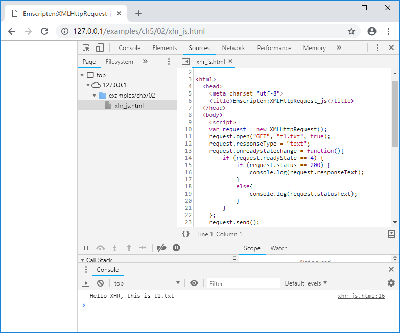
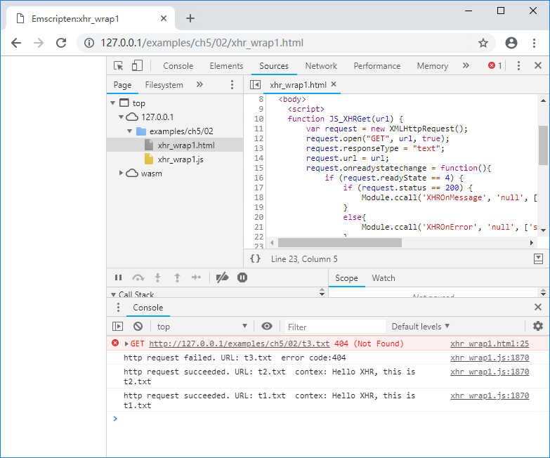
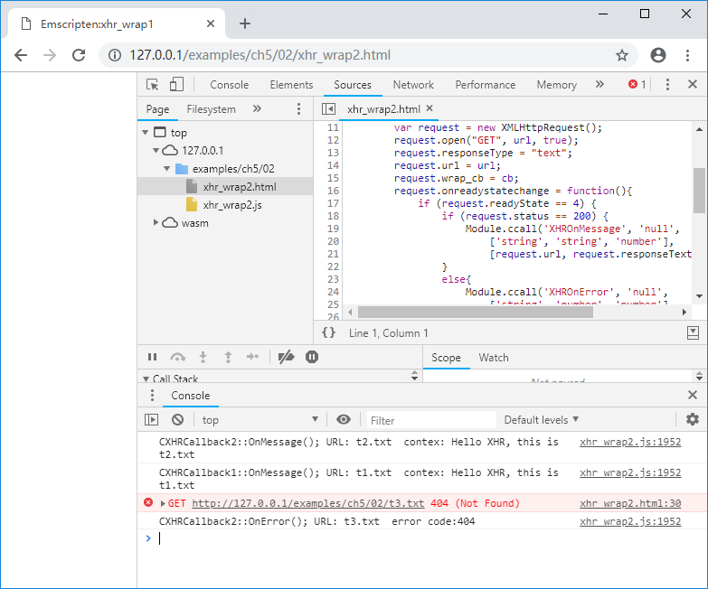

5.1 XMLHttpRequest
http协议是Web环境下最常用的传输协议，本节将介绍在Emscripten中使用XMLHttpRequest对象进行http数据传输。
5.1.1 XMLHttpRequest对象简介
下列JavaScript代码是使用XMLHttpRequest对象获取http数据的例子：
var request = new XMLHttpRequest();
request.open("GET", "t1.txt", true);
request.responseType = "text";
request.onreadystatechange = function(){
if (request.readyState == 4) {
if (request.status == 200) {
console.log(request.responseText);
}
else{
console.log(request.statusText);
}
}
};
request.send();
上述代码创建了一个XMLHttpRequest对象request，使用异步GET方法获取远端“t1.txt”的数据，并通过设置的onreadystatechange回调事件打印获取到的字符串。浏览页面，控制台输出如下：

info 关于
XMLHttpRequest的更多详细资料，可参考https://developer.mozilla.org/zh-CN/docs/Web/API/XMLHttpRequest
5.1.2 XMLHttpRequest对象的C接口封装
为了避免UI挂起，通常情况下我们使用异步模式发起http请求，因此XMLHttpRequest对象的C封装接口分为两个部分：
- 由JavaScript实现，供C调用。包括创建XMLHttpRequest对象、发起http请求等主动行为；
- 由C实现，供JavaScript调用。包括各种事件的回调。
来看C部分的代码：
//xhr_wrap1.cpp
//imp by JavaScript, call by C:
EM_PORT_API(void) XHRGet(const char* url);
//imp by C, call by JavaScript:
EM_PORT_API(void) XHROnMessage(const char* url, const char* data){
printf("http request succeeded. URL: %s contex: %s\n", url, data);
}
EM_PORT_API(void) XHROnError(const char* url, const int error_code){
printf("http request failed. URL: %s error code:%d\n", url, error_code);
}
int main(){
XHRGet("t1.txt");
XHRGet("t2.txt");
XHRGet("t3.txt");
}
XHRGet()是在JavaScript中实现的，导入库部分代码如下：
//pkg1.js
mergeInto(LibraryManager.library, {
XHRGet: function (url) {
return JS_XHRGet(Pointer_stringify(url));
},
})
XHRGet()调用了JS_XHRGet()方法，其位于"xhr_wrap1.html"中：
//xhr_wrap1.html
function JS_XHRGet(url) {
var request = new XMLHttpRequest();
request.open("GET", url, true);
request.responseType = "text";
request.url = url;
request.onreadystatechange = function(){
if (request.readyState == 4) {
if (request.status == 200) {
Module.ccall('XHROnMessage', 'null',
['string', 'string'], [request.url, request.responseText]);
}
else{
Module.ccall('XHROnError', 'null',
['string', 'number'], [request.url, request.status]);
}
}
};
request.send();
}
使用以下命令编译：
emcc xhr_wrap1.cpp --js-library pkg1.js -s "EXTRA_EXPORTED_RUNTIME_METHODS=['ccall']" -o xhr_wrap1.js
浏览器打开页面后，控制台输出：

可以看到程序正确的处理了返回值，并且由于使用了异步http请求，返回的顺序与请求的顺序并不一致。
5.1.3 扩展回调处理
有时候我们在C++中有多个对象都需要发起http请求，而每个对象处理http返回的方式各不相同，此时5.1.2节中的封装方法将无法满足需要。因此，我们需要参考4.3节的方法对封装进行改进，C代码如下：
//xhr_wrap2.cpp
struct XHR_CB;
//imp by JavaScript, call by C:
EM_PORT_API(void) XHRGet(const char* url, XHR_CB* cb);
//XHR callback interface:
class CXHRCallbackInterface{
public:
CXHRCallbackInterface(){}
virtual ~CXHRCallbackInterface(){}
virtual void OnMessage(const char* url, const char* data) = 0;
virtual void OnError(const char* url, const int code) = 0;
};
//XHR callback1:
class CXHRCallback1 : public CXHRCallbackInterface{
public:
CXHRCallback1(){}
virtual ~CXHRCallback1(){}
void OnMessage(const char* url, const char* data) {
printf("CXHRCallback1::OnMessage(); URL: %s contex: %s\n", url, data);
}
void OnError(const char* url, const int code) {
printf("CXHRCallback1::OnError(); URL: %s error code:%d\n", url, code);
}
};
//XHR callback2:
class CXHRCallback2 : public CXHRCallbackInterface{
public:
CXHRCallback2(){}
virtual ~CXHRCallback2(){}
void OnMessage(const char* url, const char* data) {
printf("CXHRCallback2::OnMessage(); URL: %s contex: %s\n", url, data);
}
void OnError(const char* url, const int code) {
printf("CXHRCallback2::OnError(); URL: %s error code:%d\n", url, code);
}
};
//imp by C, call by JavaScript:
EM_PORT_API(void) XHROnMessage(const char* url, const char* data, XHR_CB* cb){
CXHRCallbackInterface* ci = (CXHRCallbackInterface*)cb;
ci->OnMessage(url, data);
}
EM_PORT_API(void) XHROnError(const char* url, const int code, XHR_CB* cb){
CXHRCallbackInterface* ci = (CXHRCallbackInterface*)cb;
ci->OnError(url, code);
}
CXHRCallback1 cb1;
CXHRCallback2 cb2;
int main(){
XHRGet("t1.txt", (XHR_CB*)&cb1);
XHRGet("t2.txt", (XHR_CB*)&cb2);
XHRGet("t3.txt", (XHR_CB*)&cb2);
}
JavaScript导入库代码如下：
//xhr_wrap2.pkg
mergeInto(LibraryManager.library, {
XHRGet: function (url, cb) {
return JS_XHRGet(Pointer_stringify(url), cb);
},
})
//xhr_wrap2.html
function JS_XHRGet(url, cb) {
var request = new XMLHttpRequest();
request.open("GET", url, true);
request.responseType = "text";
request.url = url;
request.wrap_cb = cb;
request.onreadystatechange = function(){
if (request.readyState == 4) {
if (request.status == 200) {
Module.ccall('XHROnMessage', 'null',
['string', 'string', 'number'],
[request.url, request.responseText, request.wrap_cb]);
}
else{
Module.ccall('XHROnError', 'null',
['string', 'number', 'number'],
[request.url, request.status, request.wrap_cb]);
}
}
};
request.send();
}
以上代码的核心思想在于：我们为每个XHRGet()请求绑定了一个回调处理对象cb，当http请求完成时，将调用绑定的cb对象用于处理事件。
使用以下命令编译：
emcc xhr_wrap2.cpp --js-library pkg2.js -s "EXTRA_EXPORTED_RUNTIME_METHODS=['ccall']" -o xhr_wrap2.js
浏览页面后，控制台输出如下：
